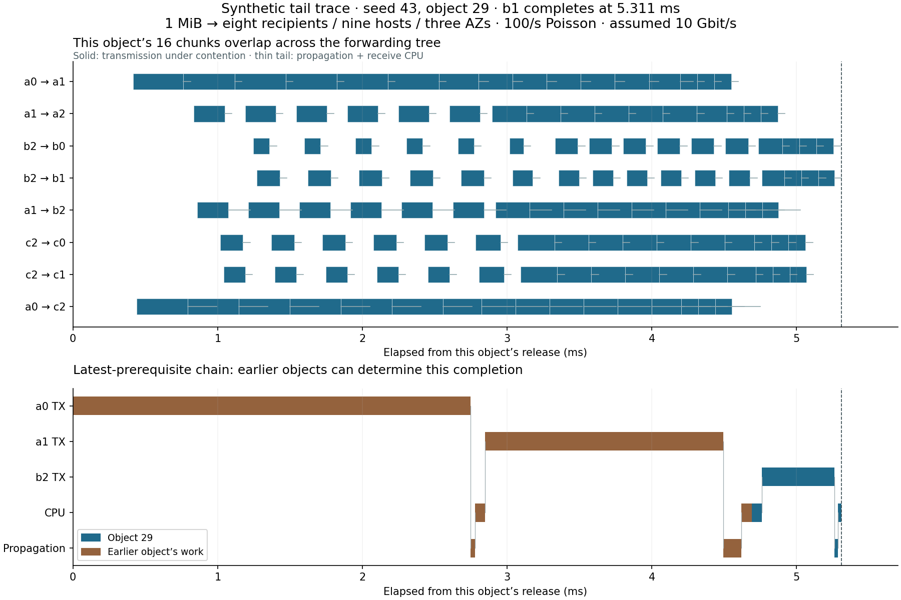
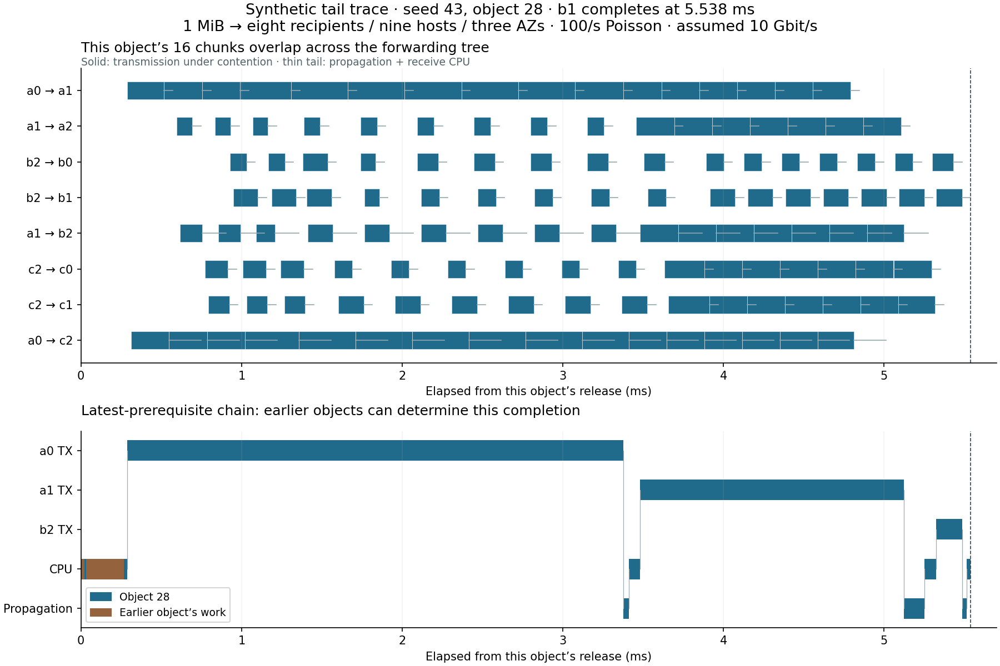

SIXDB · SYNTHETIC NETWORK DIAGNOSTIC
What the 5.322 ms means
Full 1 MiB delivery to all eight recipients—nine hosts across three modeled AZs.
From payload release to availability after receive CPU. No durable writes, consensus or returning receipts in this number.
64 KiB chunks, MTU 1500, 100 objects/s Poisson arrivals, shared 10 Gbit/s NICs. All figures below are simulated.
The 96-object run has p50 2.429 ms, p90 3.669 ms, p99 5.322 ms and p99.9 5.517 ms.
p99 is interpolated: 0.95 × 5.310826 + 0.05 × 5.538416. There is no literal 5.322 ms object.
The following two actual objects bracket that percentile. Both were traced while replaying their complete seed;
every retained output field matched exactly with auditing enabled.
The burst contains objects 27, 28 and 29, released within 1.133 ms. Each requires two source copies.
At the assumed framing and 10 Gbit/s, source transmission alone consumes 1.883 ms per object;
the three objects demand 5.648 ms of source service. The long tail is principally backlog and capacity sharing.
Object 29: 5.311 ms
Seed 43; absolute release 220.481682 ms. Last required recipient b1, completing chunk 15 (zero based). All receipts return at 5.445 ms.

The lower chart follows the latest prerequisite at CPU and stream gates. Its non-overlapping intervals sum to delivery time. Network intervals already include reduced rates under sharing. Removing an earlier job would change those rates; this trace alone does not predict the savings.
Last chunk’s queue and service timestamps
This separate accounting follows chunk 15 along its route. Queue waits contain earlier work, much of which overlaps useful transmission. They are not independent avoidable costs.
| Edge | Stage | Start ms | End ms | Duration µs |
|---|
| a0 → a1 | sender CPU queue | 0.000 | 1.093 | 1093.3 |
| a0 → a1 | sender CPU service | 1.093 | 1.117 | 23.4 |
| a0 → a1 | outgoing stream queue | 1.117 | 4.430 | 3313.5 |
| a0 → a1 | network serialization with sharing | 4.430 | 4.548 | 117.7 |
| a0 → a1 | propagation and jitter | 4.548 | 4.574 | 26.0 |
| a0 → a1 | receiver CPU queue | 4.574 | 4.574 | 0.0 |
| a0 → a1 | receiver CPU service | 4.574 | 4.597 | 23.4 |
| a1 → b2 | sender CPU queue | 4.597 | 4.622 | 24.5 |
| a1 → b2 | sender CPU service | 4.622 | 4.645 | 23.4 |
| a1 → b2 | outgoing stream queue | 4.645 | 4.763 | 117.9 |
| a1 → b2 | network serialization with sharing | 4.763 | 4.875 | 112.2 |
| a1 → b2 | propagation and jitter | 4.875 | 5.003 | 127.8 |
| a1 → b2 | receiver CPU queue | 5.003 | 5.003 | 0.0 |
| a1 → b2 | receiver CPU service | 5.003 | 5.026 | 23.4 |
| b2 → b1 | sender CPU queue | 5.026 | 5.051 | 24.5 |
| b2 → b1 | sender CPU service | 5.051 | 5.074 | 23.4 |
| b2 → b1 | outgoing stream queue | 5.074 | 5.152 | 77.2 |
| b2 → b1 | network serialization with sharing | 5.152 | 5.261 | 109.9 |
| b2 → b1 | propagation and jitter | 5.261 | 5.287 | 25.9 |
| b2 → b1 | receiver CPU queue | 5.287 | 5.287 | 0.0 |
| b2 → b1 | receiver CPU service | 5.287 | 5.311 | 23.4 |
Object 28: 5.538 ms
Seed 43; absolute release 219.850040 ms. Last required recipient b1, completing chunk 15 (zero based). All receipts return at 5.669 ms.

The lower chart follows the latest prerequisite at CPU and stream gates. Its non-overlapping intervals sum to delivery time. Network intervals already include reduced rates under sharing. Removing an earlier job would change those rates; this trace alone does not predict the savings.
Last chunk’s queue and service timestamps
This separate accounting follows chunk 15 along its route. Queue waits contain earlier work, much of which overlaps useful transmission. They are not independent avoidable costs.
| Edge | Stage | Start ms | End ms | Duration µs |
|---|
| a0 → a1 | sender CPU queue | 0.000 | 0.977 | 976.7 |
| a0 → a1 | sender CPU service | 0.977 | 1.000 | 23.4 |
| a0 → a1 | outgoing stream queue | 1.000 | 4.555 | 3554.9 |
| a0 → a1 | network serialization with sharing | 4.555 | 4.790 | 235.3 |
| a0 → a1 | propagation and jitter | 4.790 | 4.822 | 31.8 |
| a0 → a1 | receiver CPU queue | 4.822 | 4.822 | 0.0 |
| a0 → a1 | receiver CPU service | 4.822 | 4.845 | 23.4 |
| a1 → b2 | sender CPU queue | 4.845 | 4.870 | 24.5 |
| a1 → b2 | sender CPU service | 4.870 | 4.893 | 23.4 |
| a1 → b2 | outgoing stream queue | 4.893 | 4.896 | 2.8 |
| a1 → b2 | network serialization with sharing | 4.896 | 5.125 | 228.8 |
| a1 → b2 | propagation and jitter | 5.125 | 5.251 | 126.3 |
| a1 → b2 | receiver CPU queue | 5.251 | 5.251 | 0.0 |
| a1 → b2 | receiver CPU service | 5.251 | 5.275 | 23.4 |
| b2 → b1 | sender CPU queue | 5.275 | 5.299 | 24.5 |
| b2 → b1 | sender CPU service | 5.299 | 5.323 | 23.4 |
| b2 → b1 | outgoing stream queue | 5.323 | 5.323 | 0.0 |
| b2 → b1 | network serialization with sharing | 5.323 | 5.485 | 162.9 |
| b2 → b1 | propagation and jitter | 5.485 | 5.515 | 29.7 |
| b2 → b1 | receiver CPU queue | 5.515 | 5.515 | 0.0 |
| b2 → b1 | receiver CPU service | 5.515 | 5.538 | 23.4 |
Controlled sensitivities
Same fixed route and seeds. Each row changes one stated input; these are not additive savings and the route is not reoptimized.
Isolated runs preserve each object’s jitter identity with no other offered object. The 25 Gbit/s row raises every network capacity pool, while leaving CPU and propagation unchanged.
| Case | p50 ms | p90 ms | p99 ms | p99.9 ms |
|---|
| retained | 2.429 | 3.669 | 5.322 | 5.517 |
| isolated | 2.427 | 2.434 | 2.438 | 2.438 |
| 4KiB same route | 0.239 | 0.244 | 0.251 | 0.252 |
| 4KiB chunks | 2.175 | 2.944 | 4.933 | 4.937 |
| MTU 9000 | 2.210 | 3.414 | 4.741 | 5.064 |
| 25 Gbit/s | 1.574 | 1.628 | 2.609 | 2.832 |
| zero CPU cost | 2.303 | 3.818 | 5.280 | 5.574 |
4 KiB chunks means a 1 MiB object split more finely. “4KiB same route” means a 4 KiB object instead.
Zero CPU cost is a limiting counterfactual, not an implementation proposal.
Relation to xmem
The nearby retained xmem results measure durable 4 KiB serial quorum commits,
including client acknowledgement, around 2 ms at p50 across five AZs. This bulk result measures concurrent full-copy delivery
of 256 times as many payload bytes at p99. The local evidence has seven- and ten-witness cases; it does not identify Ashton’s exact eight-VM run.
These are different workloads and cannot establish a speed ratio. The matched-payload 4 KiB sensitivity here gives
0.251 ms p99 network delivery under assumed hardware and delays; it does not predict durable commit latency.
96 synthetic samples also do not establish a production p99.9 or SLA.